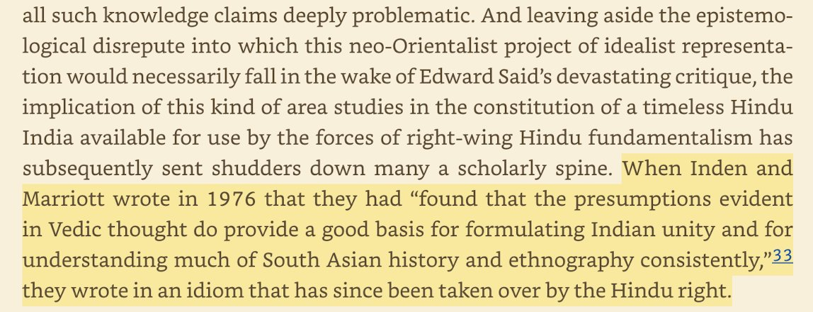
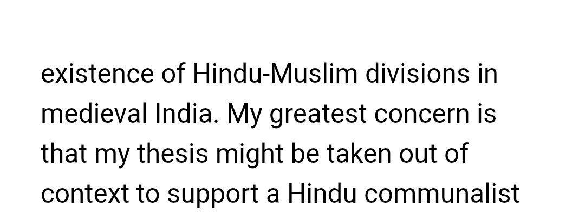
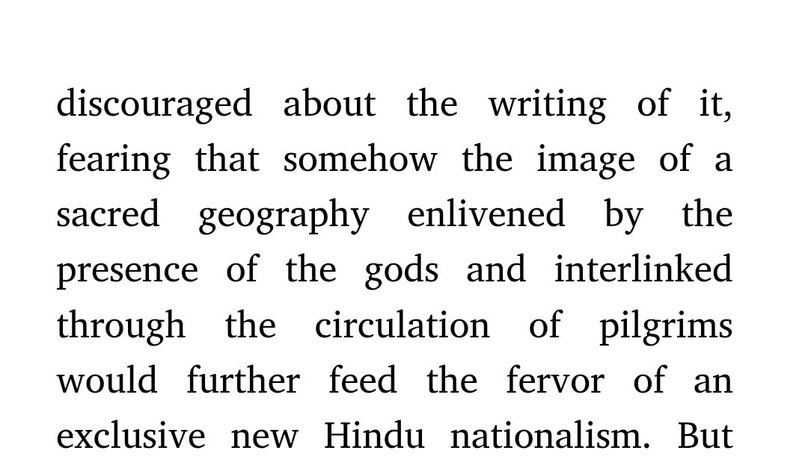
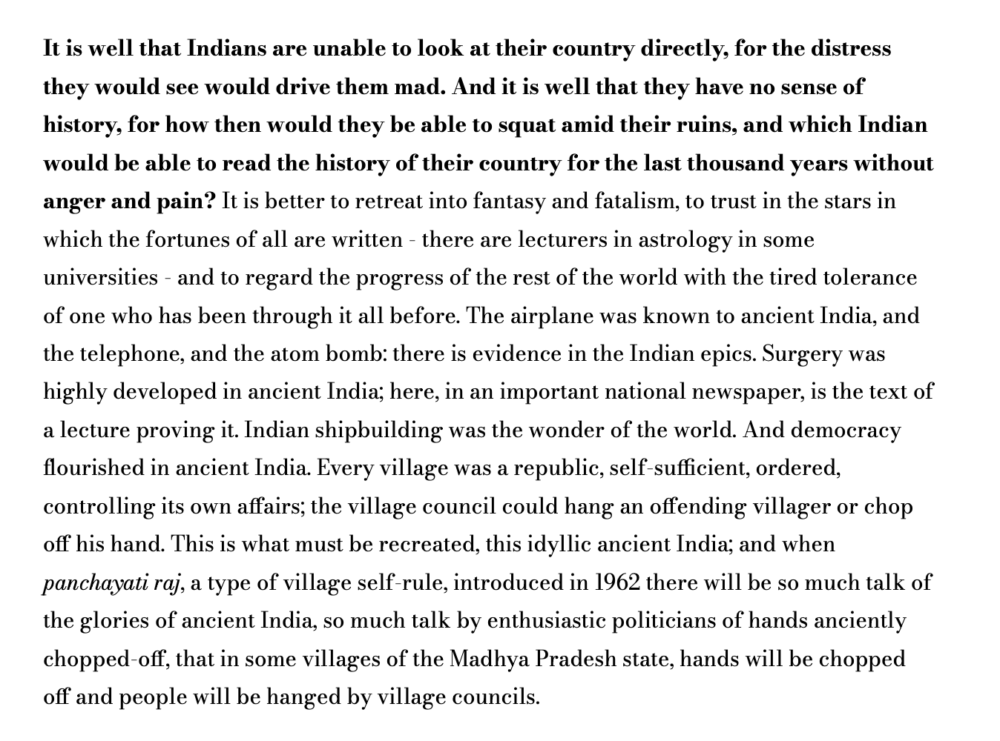
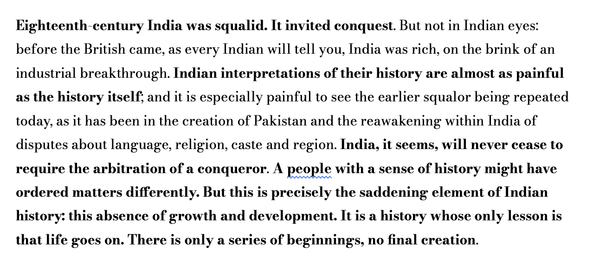

The Vedic hero Trita Āptya assisted by Vṛtrahan Indra kills the three-headed, six-eyed, three-mouthed monster named Viśvarūpa (sometimes a serpent or boar). In Avestan, Thraētaona Āthwiya with the help of Verethragna kills the three-eyed, six-eyed, three-mouthed serpent Dahāka. This ancient Indo-Iranian myth is retold in Shāhnāmeh, as the hero Fereydun slays Zahhāk or Azhi-Dahaka (an evil king sporting two black snakes that grew out of his shoulders instead of being a serpent/dragon). The court genealogists of Ghurids traced the dynasty back to Zahāk, while some plates of Chauhan Rajputs describe them as being descended from Indra (or his eyes). So, if the claims are taken literally, they would represent Ghurid-Chauhan war as continuation of an ancient IIr myth. The first battle of Tarain, with Prithviraj's victory perfectly aligned with the myth, but his defeat at the second battle disturbed the cosmic balance and thus unleashed all kinds of devastation onto Northern India.
Sources: Rigveda 10.8, 10.99; Avesta (Yasna 9; Vendidad 19); Ferdowsi, Shāhnāmeh; Minhaj-i-Siraj Juzjani, Tabaqat-i-Nasiri; C. E. Bosworth, “Ghurids,” Encyclopaedia of Islam; Dasharatha Sharma, Early Chauhan Dynasties; R. B. Singh, History of the Chāhamānas.
On ideological squeamishness in Indological scholarship
A recurring pattern becomes difficult to ignore once enough modern Indological work is read with attention rather than deference. The hesitation is not in discovering conclusions. It appears at the point where those conclusions have to be stated plainly. The evidence for civilizational continuity in India is not particularly obscure, nor is it marginal within the literature itself. Shared sacred geography, pilgrimage circuits, cross-referencing philosophical traditions, and mutual recognition across sects are all documented in the very works that are supposed to complicate or problematize them. The existence of a Hindu civilizational framework, including forms of identity that predate colonial classification, is not something these scholars fail to encounter. It is something they encounter and then restrain. The restraint follows a predictable structure. The claim is first established through evidence, often in considerable detail, and then immediately narrowed, qualified, and surrounded with defensive framing. The reason is not methodological caution. It is anticipatory. The concern, sometimes explicit and sometimes only implied, is that the conclusion might be used outside the academy in ways the author finds politically undesirable. This produces a consistent asymmetry. The same text that demonstrates continuity will treat that continuity as something that must not be allowed to harden into a straightforward conclusion. The pattern is acknowledged, but its implications are kept at arm’s length. The reader is permitted to see the structure, but not to state it without adopting the author’s caution. What results is not denial, and not quite distortion, but containment. The argument is carried forward until it reaches a point of ideological consequence and is then held there, stabilized through disclaimers that do not engage the evidence itself but attempt to regulate its interpretation. The limit is not what the material supports. The limit is how far the author is willing to follow it. This is not an isolated habit of a few writers. It appears across otherwise unrelated works, across different subfields, and across authors who agree on very little else. The convergence is therefore unlikely to be accidental. The bias does not primarily affect what is discovered. It affects what is permitted to be concluded once discovery has already taken place.



On post-liberalization Indian state strategy as pressure diffusion
A key feature of post-1990s Indian policy is that structural socio-economic tensions are to not be resolved but diffused. Two mechanisms are central: reservation-based competition for limited public sector opportunities, and outward labour mobility through private-sector migration. The combined effect is the creation of artificial scarcity across key aspiration channels: university seats, government jobs, and overseas employment, producing a continuous competitive churn. This absorbs political energy that might otherwise consolidate into demands for universal public goods such as education, healthcare, pensions, or infrastructural reform. In this view, both rural and urban discontent are redirected into individualized competition rather than collective bargaining, reducing the likelihood of coordinated pressure on the state.
On compelled assent to obvious falsehood
“In my study of communist societies, I came to the conclusion that the purpose of communist propaganda was not to persuade or convince, not to inform, but to humiliate; and therefore, the less it corresponded to reality the better. When people are forced to remain silent when they are being told the most obvious lies, or even worse when they are forced to repeat the lies themselves, they lose once and for all their sense of probity. To assent to obvious lies is...in some small way to become evil oneself. One's standing to resist anything is thus eroded, and even destroyed. A society of emasculated liars is easy to control. I think if you examine political correctness, it has the same effect and is intended to.”
— Theodore Dalrymple
On “Fantasy and Ruins” (Naipaul, early 1960s)


“It is well that Indians are unable to look at their country directly, for the distress they would see would drive them mad... It is better to retreat into fantasy and fatalism... Eighteenth-century India was squalid. It invited conquest... Indian interpretations of their history are almost as painful as the history itself... India, it seems, will never cease to require the arbitration of a conqueror... It is a history whose only lesson is that life goes on. There is only a series of beginnings, no final creation.”
V. S. Naipaul, An Area of Darkness, chapter “Fantasy and Ruins”
https://www.indiatoday.in/india-today-insight/story/from-the-archives-1997-v-s-naipaul-india-shouldn-t-have-fantasies-about-the-past-but-face-it-1988599-2022-08-16
"The stronger devour the weaker" — Arjuna on force, slaughter, and the nature of existence (Śānti Parva 12.15)
Source: Mahābhārata, Śānti Parva, Rājadharma Parva, Chapter 15 (Arjunavākya) — Arjuna speaking to Yudhiṣṭhira to break his paralysis after the war. The chapter belongs to the Rājadharma Parva sub-section of the Śānti Parva.
The core passage — verses 14–23 with Sanskrit:
12.15.14:
nācchitvā paramarmāṇi nākṛtvā karma dāruṇam |
nāhatvā matsyaghātīva prāpnoti mahatīṃ śriyam ||
"Without piercing the vitals of others, without achieving the most difficult feats, and without slaying creatures like a fisherman, no person can obtain great prosperity."
12.15.15:
nāghnatah kīrtir astīha na vittaṃ na punaḥ prajāḥ |
Indro vṛtravadhenaiva mahendraḥ samapadyata ||
"Without slaughter, no man has been able to acquire fame in this world, or wealth, or subjects. Indra himself, by the slaughter of Vṛtra, became the great Indra."
12.15.16–17:
ya eva devā haṃtāras tā'l loko'rcayate bhṛśam |
haṃtā Rudras tathā Skandaḥ Śakro'gnir Varuṇo Yamaḥ ||
haṃtā Kālas tathā Vāyur mṛtyur Vaiśravaṇo raviḥ |
vasavo marutaḥ sādhyā viśvedevāś ca Bhārata ||
"Those amongst the gods that are given to slaughtering others are adored much more by men. Rudra, Skanda, Śakra, Agni, Varuṇa, Yama — slaughterers all. Kāla, Vāyu, Mṛtyu, Vaiśravaṇa, Ravi, the Vasus, the Maruts, the Sādhyas, and the Viśvedevas — all slaughterers."
12.15.20–21:
na hi paśyāmi jīvaṃtaṃ loke kaṃ cid ahiṃsayā |
sattvaiḥ sattvāni jīvanti durbalaiḥ balavatarāḥ ||
nakulo mūṣakān atti biḍālo nakulaṃ tathā |
biḍālam atti śvā rājan śvānaṃ vyālamṛgas tathā ||
"I do not behold any creature in this world that supports life without doing injury to others. Animals live upon animals — the stronger upon the weaker. The mongoose devours mice; the cat devours the mongoose; the dog devours the cat; the dog again is devoured by the leopard."
12.15.22–23:
tān atti puruṣaḥ sarvān paśya dharmo yathāgataḥ |
prāṇasyānnam idaṃ sarvaṃ jaṃgamaṃ sthāvaraṃ ca yat ||
vidhānaṃ devaviḥitaṃ tatra vidvān na muhyati |
yathā sṛṣṭo'si rājendra tathā bhavitum arhasi ||
"Behold all things again are devoured by the Destroyer when he comes! This mobile and immobile universe is food for living creatures. This has been ordained by the gods. The man of knowledge is therefore never stupefied at it. O king, you should be as you were created."
The argument: Arjuna is making a realist-cosmological case against Yudhiṣṭhira's paralysis and guilt after the war. The structure is threefold: (1) empirical — no prosperity has ever been achieved without force and slaughter; (2) theological — the most adored gods are precisely the slaughterers, not the peaceful ones (note the explicit contrast in verse 18–19: the gods of equanimity and peace are worshipped only by a few, while the slaughtering gods command universal reverence); (3) cosmological — the strong eating the weak is not a moral failure but a devaviḥita vidhāna, a divinely ordained arrangement. The man of knowledge does not become "stupefied" (na muhyati) at it — stupefaction is the mark of the ignorant.
The proto-Nietzschean resonance is precise on multiple axes: the affirmation of life as fundamentally predatory rather than cooperative; the observation that the gods humans actually worship are the gods of power and destruction rather than the gods of peace; the contempt for the reactive guilt of the weak (Yudhiṣṭhira's paralysis) as itself a form of stupefaction; and the injunction to be as you were created — to affirm one's nature rather than recoil from it. The Nietzschean parallel is structural, not merely rhetorical.
Mahābhārata 12.15.14–23 (Śānti Parva, Rājadharma Parva, Arjunavākya); Sanskrit text per Vyasa Online / BORI critical edition